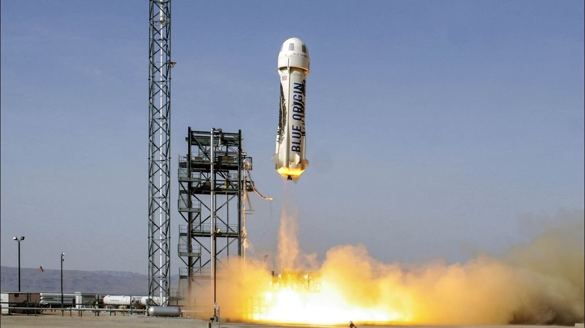

Jeffrey Preston "Jeff" Bezos[3] (nascido Jeffrey Preston Jorgensen; Albuquerque, 12 de janeiro de 1964) é um empresário estadunidense conhecido por fundar, e ter sido o presidente e CEO da Amazon,[4] uma importante e famosa empresa de comércio eletrônico dos Estados Unidos.
Bezos nasceu em Albuquerque, no Novo México e cresceu em Houston, Texas. Graduou-se na Universidade de Princeton em 1986 com a graduação em engenharia elétrica e informática. Passou a trabalhar em Wall Street em uma variedade de campos relacionados de 1986 até o início de 1994. Bezos fundou a Amazon.com no final de 1994. A empresa começou com o comércio de livros e expandiu para uma grande variedade de produtos e serviços, e mais recentemente começou a investir em transmissões de vídeo e áudio. Atualmente, é a maior empresa online de vendas do mundo, bem como o maior fornecedor mundial de serviços de infraestrutura em nuvem através do seu braço Amazon Web Services. Bezos também tem uma série de outros investimentos empresariais que são gerenciados através de Bezos Expeditions.

Bezos diversificou seus interesses comerciais quando fundou a empresa aeroespacial Blue Origin em 2000. Ele comprou o jornal The Washington Post em 2013 por US$ 250 milhões em dinheiro.[6] A Blue Origin começou a testar os voos para o espaço em 2015 e os planos para o voo espacial humano suborbital comercial começaram a partir de 2018.
Em janeiro de 2018, após a inauguração da primeira unidade da Amazon Go em Seattle, Jeff Bezos tornou-se o homem mais rico da história desde 1982, com uma fortuna de US$ 113 bilhões de dólares.